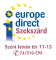

Europe Direct Tolna
Információszolgáltatás az Európai Unióról.
EU tapasztalatcserék, konferenciák, továbbképzések, szemináriumok, információs napok, versenyek, vetélkedők és egyéb uniós vonatkozású rendezvények szervezése.
EU-tanórák szervezése, EU-tantermek nyitása.
Kiadványok terjesztése.
EU dokumentumtár magyar és idegen nyelven.
Olvasótermi és könyvtári szolgáltatások, európai uniós adatbázisok hozzáférhetővé tétele, magyar és idegen nyelven egyaránt.
Diplomamunkákhoz háttéranyag gyűjtése.
Pályázatfigyelés, tanácsadás.
EU kapcsolatépítés és partnerkeresés.
Gyakornokok fogadása.
Információk korlátozott terjedelemben történő nyomtatása illetve fénymásolása.
Európai Unióval kapcsolatos, ingyenes kiadványok korlátozott számban történő rendelkezésre bocsátása.
Internet-hozzáférés uniós tartalmakhoz.
oktatási intézmények vezetői, munkatársai
diákok
döntéshozók, köztisztviselők, önkormányzatok
civil szféra szereplői
kulturális intézmények és szervezetek
helyi és regionális média képviselői
minden olyan állampolgár, aki az Európai Unióval kapcsolatban tájékoztatást szeretne kapni vagy információhoz kíván jutni
tájékoztatni a megye teljes lakosságát az EU működéséről, lehetőségeiről.
naprakész, hiteles tájékoztatást nyújtani az Európai Unió különböző szakpolitikáiról illetve a bővítési folyamat aktuális kérdéseiről.
pályázatok elkészítésénél tanácsot, segítséget nyújtani, a pályázni kívánó szervezeteknek, vállalkozóknak, magánszemélyeknek.
EU-s pályázatok beadásához partnereket keresni.
EU-s események szervezőit tanácsadással segíteni.
diákok és iskolák részére versenyeket és vetélkedőket szervezni, őket az EU-s továbbtanulási lehetőségekről tájékoztatni.
közigazgatási szféra részére szakmai programokat, rendezvényeket szervezni.
helyi médiával, civil szervezetekkel, kamarákkal, önkormányzatokkal, közszolgálati intézményekkel és egyéb szervezetekkel kapcsolatot kialakítani.
Tolna Megyei Kormányhivatal Szent István téri épülete 40-es iroda 7100 Szekszárd, Szent István tér 11-13.
0674/510-295
eip@tolnamegye.hu | szekszard@europedirect.hu
Hétfő-csütörtök 8:00 - 16:30
Péntek 8:00 - 14:00
Egyéb időpontokban előzetes megbeszélés alapján.
A nyitva tartás rendezvényeink alatt módosulhat. Megértésüket köszönjük!